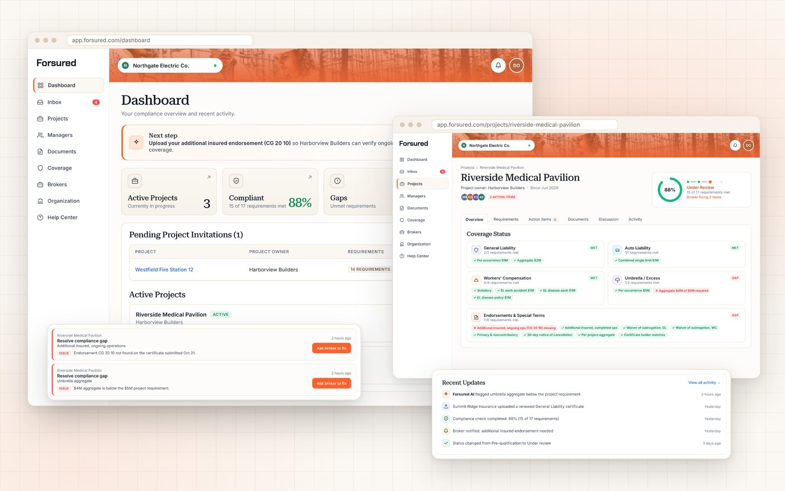
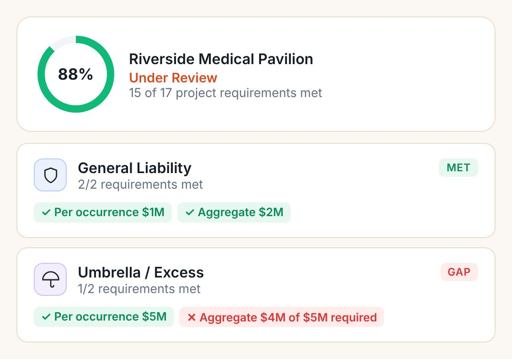
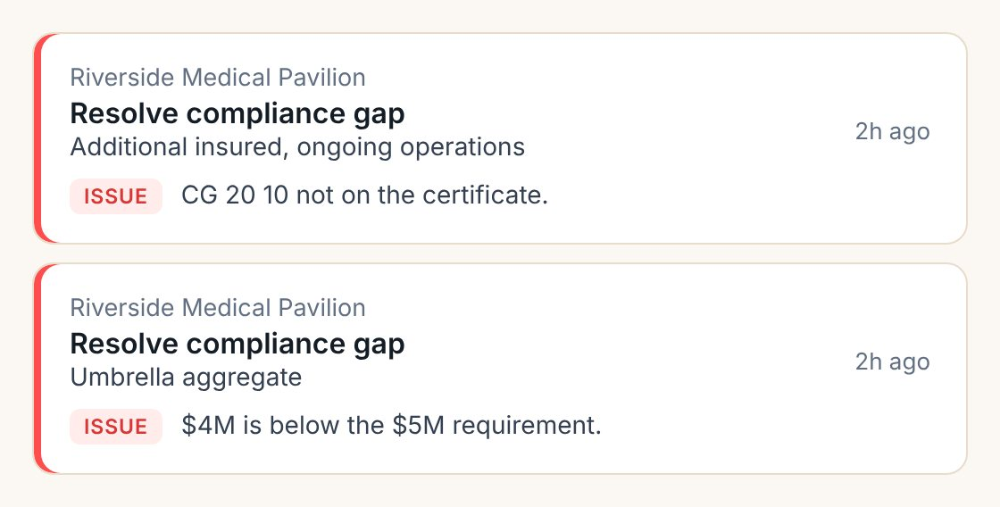
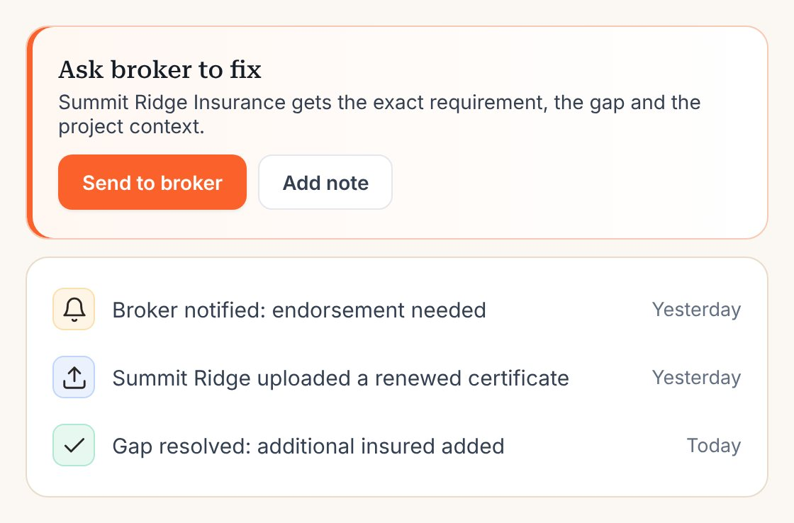
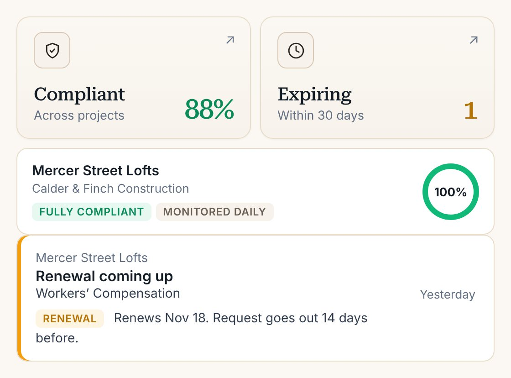

Continuous contractor insurance compliance
Catch the gap before it’s a jobsite problem.
Forsured checks every contractor COI against your project requirements, flags coverage gaps, brings the broker into the fix, and keeps watching after approval.
- Reads endorsements, not just the ACORD 25
- Procore integration for early access customers
Every contractor COI, checked against the project it’s for.
A sample project, start to finish. Forsured reads each certificate and endorsement, flags what's missing, brings the broker in to fix it, and keeps watching after approval.

Checked against the project
Each certificate and endorsement is compared to the limits and terms this project actually requires.

Gaps flagged with the reason
Missing endorsements and low limits show up in your inbox with exactly what's wrong and what's needed.

Fixed with the broker
Send the gap to the broker. They see the requirement, the document and the project, so the fix comes back right.

Watched after approval
Renewals and coverage changes are tracked across active projects, so nothing lapses quietly.

Insurance compliance was never built for how construction actually works.
Every project creates another web of project requirements, contractors, COIs, endorsements, brokers, expirations, and email threads. The hard part is not storing the documents. The hard part is getting a confident answer about whether a contractor's coverage meets the requirements of a specific project.
Today’s reality
Spreadsheets, inboxes, and interpretation work.
Scattered requirementsInsurance standards live in contracts and project documents.
Version chaosCOIs and endorsements arrive in different versions across inboxes.
Endless loopsMissing items create repeated GC, contractor, and broker back-and-forth.
Hidden gapsA submission can look complete while a critical requirement is missing.
The Forsured difference
One clear answer per contractor, per project.
Understand the requirementCapture the project's insurance standard, including exceptions.
Review the submissionAI-assisted review flags coverage, endorsement, and expiration issues.
Explain the exceptionSee what does not match and why, so the next action is clear.
Keep humans in controlA transparent workflow to approve, decline, comment, and resolve.
“What stood out to us is that Forsured doesn't just organize the paperwork. It helps us understand what meets the project requirements, what needs attention, and what needs to happen next. That clarity across the GC, subcontractor, and broker is where we see the real value.”
Everything between the requirement and the renewal.
Define what a project requires, review the COIs contractors submit, and keep compliance current, all in one place.
Project-specific requirements
Define your insurance standards once, then apply project-level requirements and exceptions where the work demands it.
AI-assisted insurance review
Review submitted insurance documents against the requirements that matter and surface missing, inconsistent, or non-compliant items.
Clear compliance triage
See what is ready, what needs review, and what needs to be resolved across contractors and active projects.
Shared GC and broker workflow
Give the people resolving an issue the same context, documents, comments, and status instead of another disconnected email chain.
Continuous monitoring
Track expirations and changing compliance status across active projects so issues are addressed before they become jobsite problems.
Examples use sample data.
From requirements to continuous compliance.
Five steps, one shared record for the GC, the contractor and the broker.
Set
Start from your standards and add the project's exceptions.
Submit
Contractors or their brokers send the COIs and endorsements.
Review
Each document is checked against the project requirements.
Resolve
GC, contractor and broker fix what's missing in one place.
Monitor
Expirations and changes are tracked across active projects.
Built for the GC caught in the middle.
Forsured starts with the GC's compliance problem, creates a shared workflow with insurance brokers, and makes submission and correction easier for trade contractors.
General Contractors
- Standardize insurance requirements across projects while preserving project-level exceptions
- Reduce manual document review and repetitive follow-up
- See compliance status across contractors and projects
- Keep a transparent review trail without relying on inbox history
Insurance Brokers
- See exactly what each project requires
- Understand why a submission needs attention
- Reduce repeated email requests and document-version confusion
- Help clients modernize compliance without losing the advisory relationship
Trade Contractors
- Clear project-specific requirements
- Faster visibility into missing or incorrect items
- Work with your broker from the same requirements and compliance status
- A simpler route from submission to GC approval
Built around the way construction insurance compliance actually gets resolved.
Most COI tools track whether a certificate is on file and current. Forsured checks whether the coverage actually meets the project, and keeps the GC, contractor and broker on the same record until it does.
| Typical COI tracking | With Forsured | |
|---|---|---|
| What it's built around | A vendor list: certificates on file, with expiration dates | Each project, with its own requirements, contractors, brokers and exceptions |
| What a COI is checked against | One requirement set per company or vendor type | The requirements of the specific project, exceptions included |
| Endorsements | The certificate gets read; endorsement wording often still needs a manual look | Endorsements are read against the project's requirements, with the reason for any gap |
| When checking happens | At onboarding, then again at renewal or before payment | From prequalification through closeout, and whenever coverage changes |
| How gaps get fixed | Automated reminders until a new certificate arrives | The broker sees the requirement, the document and the gap in one shared record |
| Who makes the call | Software pulls the fields; anything unusual lands back in someone's inbox | AI flags and explains each issue; your team approves, declines and signs off on exceptions |
Spot the risk. Flag the gap. Avoid the loss.
Free, no strings attached. Send us one project's requirements and a contractor COI or two, through the form or to hello@forsured.ai. We'll run the check, then walk you through what we found.
- Send one projectOne project's requirements and a contractor COI or two.
- We run the checkEvery COI reviewed against the project requirements.
- Walk through the gapsA short call on what we found and what to fix. Free, whether or not Forsured is a fit.
Get Your Free COI Risk Check
Tell us who you are and we'll reply with where to send your project requirements and contractor COIs.
No spam. We'll only use this to follow up about Forsured.
Thanks. We’ll be in touch.
A member of the Forsured team will follow up with next steps for your free COI risk check.
Built with construction and insurance professionals, not in a vacuum.
We onboard a limited number of general contractors and broker partners at a time: white-glove setup on your real projects, with your brokers included by design. Not ready for a check? Join the waitlist and we'll reach out as capacity opens.
What is the best COI tracking software for construction?
It depends on how your company builds. If your projects carry different owner, lender or contract requirements, look for COI tracking software that checks every certificate and endorsement against the requirements of the project it's for, brings the contractor's broker into the fix, and keeps checking after approval. That's what Forsured is built to do. Our COI tracking software buyer's guide compares eight tools on endorsement review, project requirements, broker follow-up, Procore and pricing.
Does Forsured check endorsements, not just certificates?
Yes. Forsured reads each certificate and endorsement, not just the ACORD 25, and compares them to the limits and terms the project actually requires. It flags gaps such as a missing additional insured endorsement for ongoing operations (CG 20 10) or an umbrella aggregate below the requirement, and explains what's wrong and what's needed. A person on your team approves or waives every result. See which COI tracking software checks endorsements.
What is Forsured?
Forsured is construction insurance compliance software. It checks contractor COIs and endorsements against project requirements for general contractors, identifies coverage gaps, brings insurance brokers in to resolve deficiencies, and monitors compliance across active projects.
How does Forsured use AI?
Forsured uses AI to assist the review of submitted insurance documents against a project's specific requirements. It surfaces missing, inconsistent, or non-compliant items such as coverage limits, endorsements, and expirations, and explains what does not match so the next action is clear. People responsible for risk stay in control of approvals, declines, and exceptions.
Who is Forsured built for?
Forsured is built primarily for general contractors and construction managers who are responsible for contractor insurance compliance. Insurance brokers work inside the same workflow as collaborative partners, and trade contractors get a clearer path to submit documentation and correct what is missing.
What is a COI and why does compliance matter in construction?
A Certificate of Insurance (COI) is a document that summarizes a contractor's insurance coverage. In construction, each project's requirements spell out the coverage, limits, and endorsements every contractor on the job must carry. Reviewing those submissions accurately matters because a certificate can look complete while a critical requirement is still missing, which leaves the project carrying avoidable risk.
Does Forsured integrate with Procore or other construction software?
A Procore integration is available for Forsured early access customers, keeping project and contractor data aligned with the compliance workflow. Additional integrations are in development.
How do I get access to Forsured?
Forsured is intentionally onboarding a limited number of general contractors and broker partners at a time so every team gets direct access to the Forsured team and a high-quality implementation. Teams can request a free COI risk check or join the waitlist on the Forsured website, and Forsured follows up as onboarding capacity becomes available.